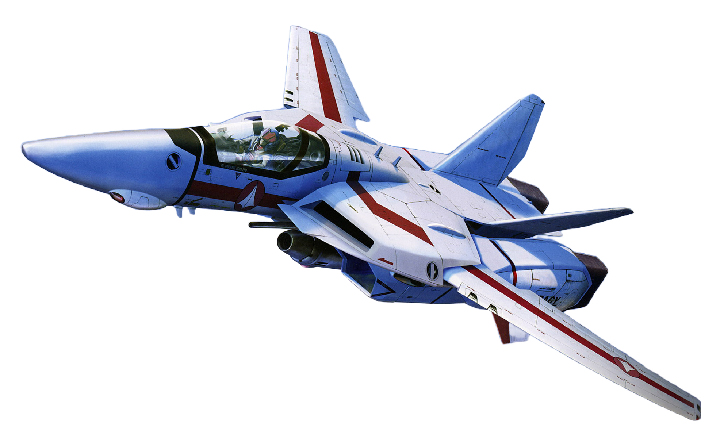
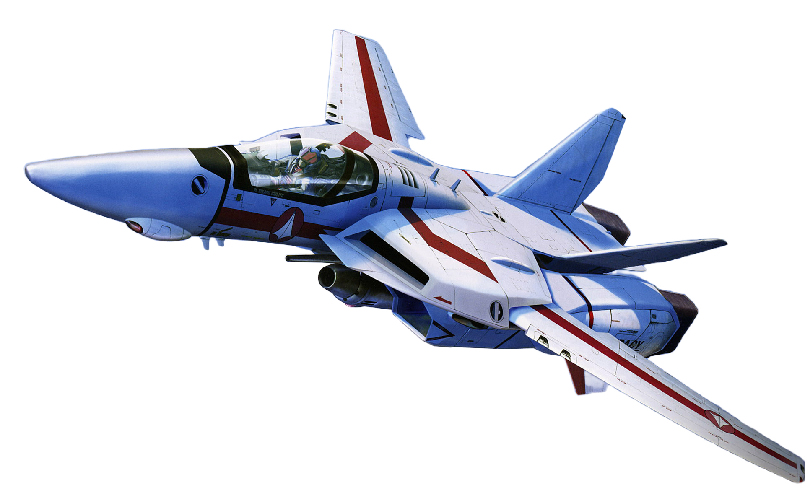

超时空要塞Delta
在《超时空要塞Delta》的宇宙中，人类已经扩展到了星际，但随着新世界的发现，也引来了未知的威胁。Delta要塞，作为人类的前线基地，装备了最尖端的武器和超时空跳跃技术，负责探索和保卫人类的边疆。
玩家将扮演Delta要塞的精英飞行员，驾驶战斗机在浩瀚的宇宙中执行任务，与外星种族“虚空之影”进行激烈的空中对抗。在战斗中，玩家需要不断提升自己的技能，解锁更先进的装备，以应对不断升级的威胁。
随着故事的推进，玩家将揭开宇宙深处的秘密，发现古老文明的遗迹，并在星际战争中扮演关键角色，决定人类在宇宙中的命运。